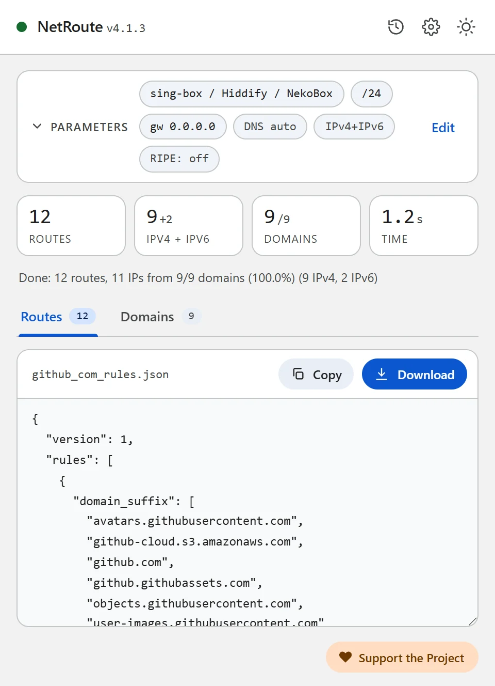
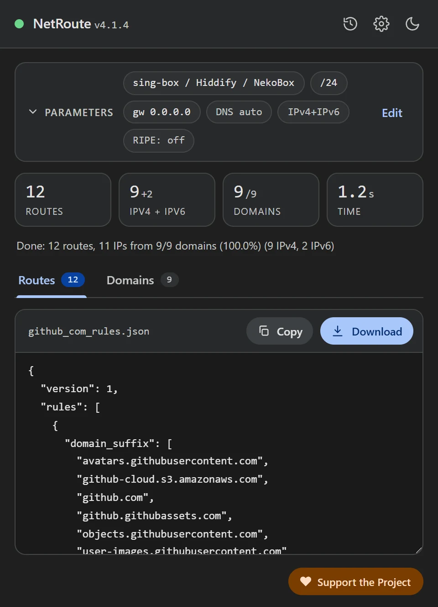

Rule-set de sing-box desde cualquier sitio web: dominios y redes para Hiddify y sing-box
Actualizado · NetRoute versión 4.1.4
sing-box y los clientes construidos sobre él — las apps oficiales de sing-box, Hiddify, NekoBox — deciden qué pasa por el proxy mediante reglas: listas de dominios y redes que desde la versión 1.8.0 se empaquetan como rule-sets. NetRoute construye ese rule-set directamente desde un sitio web: abre el sitio, haz clic en «Analizar sitio web», descarga el .json.
Qué contiene el archivo
Un rule-set en el formato fuente (source) es un documento JSON con version y rules. NetRoute escribe los dominios y las redes como dos reglas separadas: según la documentación de sing-box, las condiciones dentro de una regla se combinan con un AND lógico, así que una sola regla con dominios y redes coincidiría solo cuando ambos coincidieran.
{
"version": 1,
"rules": [
{ "domain_suffix": ["github.com", "githubusercontent.com"] },
{ "ip_cidr": ["140.82.112.0/20", "185.199.108.0/22", "2606:50c0::/32"] }
]
}domain_suffix— coincidencia por sufijo de dominio: el propio dominio y todos sus subdominios. NetRoute compacta la lista: cuando la página usaapi.github.comygithub.com, solo quedagithub.com; el prefijowww.se descarta. Se listan todos los dominios del escaneo, incluidos los que no se resolvieron a una IP.ip_cidr— coincidencia por red. Son las mismas redes agregadas que NetRoute emitiría como rutas para un router, IPv4 e IPv6 juntas; la regla está presente cuando al menos un dominio se resolvió a una dirección.version: 1— la primera versión del formato, introducida en sing-box 1.8.0.


Qué necesitas
- sing-box 1.8.0 o más reciente: el binario
sing-boxen un equipo, servidor o router, o las apps oficiales sing-box for Android, sing-box for Apple platforms, sing-box for Desktop - o Hiddify — un cliente construido sobre el núcleo de sing-box que, según su README, acepta configuraciones en el formato de sing-box (Android, iOS, Windows, macOS, Linux)
- Un outbound de proxy funcional en la configuración — cualquier protocolo
- La extensión NetRoute en Chrome
Paso 1. Genera el rule-set en NetRoute
- Abre el sitio web en Chrome y recarga la página para que el sniffer de la extensión vea las solicitudes en segundo plano
- Inicia NetRoute
- En SO de destino elige sing-box / Hiddify / NekoBox — el grupo «Clientes proxy»
- Los campos IP de puerta de enlace y Dispositivo no afectan a este formato
- Haz clic en Analizar sitio web
- En la pestaña Dominios desmarca lo que no necesites — contadores, redes publicitarias, CDN de terceros; las reglas se actualizan al instante
- Haz clic en Descargar: el archivo recibe el nombre del sitio, por ejemplo
github_com_rules.json
ip_cidr está siempre en el archivo cuando hay direcciones resueltas, y no estorba a la regla de dominios. Si quieres solo dominios — elimina la segunda regla del archivo. Si quieres menos redes — elige IPv4 Only en Modo de ruta: la regla no conservará prefijos IPv6.
Paso 2. Describe el archivo en la configuración de sing-box
Un archivo local junto a la configuración. format puede omitirse cuando la ruta del archivo termina en .json o .srs; desde 1.10.0 sing-box recarga el archivo por sí mismo cuando cambia.
{
"route": {
"rule_set": [
{
"type": "local",
"tag": "netroute",
"format": "source",
"path": "github_com_rules.json"
}
],
"rules": [
{ "rule_set": "netroute", "action": "route", "outbound": "proxy" }
],
"final": "direct"
}
}outbound— el tag de tu outbound de proxy."action": "route"es obligatorio a partir de sing-box 1.11.0: el antiguo campooutbounddirectamente en la regla está obsoleto allí.final— el outbound por defecto para todo lo que no coincidió con ninguna regla;directda el split tunneling clásico.
Un archivo por URL. Sube el .json a un repositorio de GitHub o a tu propio servidor e indica el enlace directo al archivo raw; por defecto sing-box lo actualiza una vez al día (update_interval = 1d):
{
"type": "remote",
"tag": "netroute",
"format": "source",
"url": "https://raw.githubusercontent.com/you/rules/main/github_com_rules.json",
"update_interval": "1d"
}Si el enlace tiene que descargarse a través del proxy: hasta sing-box 1.13 lo hacía el campo download_detour con el tag de un outbound; 1.14.0 lo declaró obsoleto en favor de http_client, y 1.16.0 lo eliminó.
route de arriba junto con tu outbound a esa configuración e impórtala como perfil. Cómo se importa exactamente un perfil en tu versión de Hiddify se describe en la documentación de la app.
Paso 3. Comprueba
La sintaxis de la configuración junto con el rule-set:
sing-box check -c config.jsonDespués inicia sing-box y abre el sitio. Si se abre a través del proxy mientras los demás sitios salen directamente — la regla funciona. Si no, repasa los problemas frecuentes de abajo.
Rule-set compilado (.srs)
Para listas grandes sing-box ofrece un formato binario. Compila el archivo de NetRoute con el comando de la documentación:
sing-box rule-set compile github_com_rules.json
# → github_com_rules.srsEn la configuración indica "format": "binary" y la ruta al .srs. Para una docena de sitios no es necesario.
Problemas frecuentes
sing-box rechaza el archivo
Los rule-sets aparecieron en sing-box 1.8.0; las versiones anteriores y los clientes construidos sobre ellas no conocen el formato. NetRoute escribe la mínima version: 1 — todas las versiones posteriores la leen.
La regla no coincide con un subdominio
domain_suffix cubre solo los subdominios de los dominios de la lista. Si el sitio obtiene datos de otro dominio, debería verse en la pestaña Dominios de NetRoute. Recorre el sitio antes de escanear — inicia sesión, abre un video — para que el sniffer de la extensión vea también las solicitudes diferidas.
Las conexiones por IP eluden el proxy
Una regla de dominio necesita que sing-box conozca el nombre de destino. Para eso sirve el sniffing: toma el nombre del campo Host de HTTP y del Server Name en TLS y QUIC. Desde sing-box 1.11.0 el sniffing se activa con una regla con "action": "sniff" en route.rules (el antiguo campo sniff del inbound está obsoleto y se eliminó en 1.13.0). Las conexiones sin nombre se comparan con la regla ip_cidr — para servicios cuyas direcciones cambian, activa Optimización de rutas → Prefijo BGP en las opciones de NetRoute: las redes pasan a ser los prefijos anunciados en lugar de direcciones sueltas.
Un rule-set para varios sitios
Haz clic en Lista de URL junto al botón de análisis y pega la lista de sitios — NetRoute construye un rule-set para todos ellos; el archivo se llama bulk_N_rules.json.
DNS y fugas
Una regla de dominio no cambia cómo el navegador resuelve los nombres: la consulta DNS de github.com sigue yendo al resolver configurado en el sistema o en el propio navegador, y cuando ese es el resolver del ISP, el ISP ve los nombres de los sitios.
- En sing-box las reglas DNS pueden referenciar el mismo rule-set: una entrada en
dns.rulescon"rule_set": "netroute","action": "route"yserverenvía las consultas de estos dominios al servidor DNS elegido. Para que el propio servidor salga por el proxy, dale undetourcon el tag del outbound — un campo de los Dial Fields compartidos; los servidores en el nuevo formato ("type": "https"y otros) aparecieron en sing-box 1.12.0. - En Chrome desactiva «Usar DNS seguro» o apúntalo a un resolver en el que confíes: el DNS-over-HTTPS propio del navegador funciona saltándose el resolver del sistema — consulta la sección Troubleshooting del proyecto.
Comprobación: dnsleaktest.com con el cliente activado debe mostrar el resolver del proxy, no el del ISP.
Archivo de configuración de ejemplo
Plantilla lista para editar. Reemplaza los dominios y redes de ejemplo con la salida de NetRoute para tus sitios.
singbox-rules.json— un rule-set en el formato fuente con reglasdomain_suffixeip_cidr
{
"version": 1,
"rules": [
{
"domain_suffix": [
"avatars.githubusercontent.com",
"github.com",
"github.githubassets.com"
]
},
{
"ip_cidr": [
"140.82.112.0/20",
"185.199.108.0/22",
"2606:50c0::/32"
]
}
]
}
Consejo: los formatos de texto se descargan con una cabecera de comentarios. Desactiva «Incluir comentarios en archivos exportados» en las opciones de NetRoute para obtener solo las reglas; los formatos JSON nunca llevan comentarios.
Todos los ejemplos de configuración en GitHub →
Documentación oficial
- sing-box: Rule Set — campos local y remote
- sing-box: Source Format — version, el comando compile
- sing-box: Headless Rule — domain_suffix, ip_cidr
- sing-box: Rule Action — route, sniff
- sing-box: DNS Rule
- Hiddify — README: formatos de configuración compatibles
Guías relacionadas
- Keenetic — rutas desde un archivo
.bat - MikroTik — importación de script
.rscen RouterOS - WireGuard — split tunneling mediante
AllowedIPs - Linux — script de shell con
ip route - OpenVPN — directivas
routeen la configuración del cliente - Xray / 3X-UI / v2rayN — routing.rules para Xray-core, 3X-UI y v2rayN
- Happ — perfil de enrutamiento como enlace happ://routing
- AmneziaVPN — lista de sitios para split tunneling
¿Listo para probar?
NetRoute — extensión gratuita de Chrome para generar rutas desde cualquier sitio web.
Instalar extensión